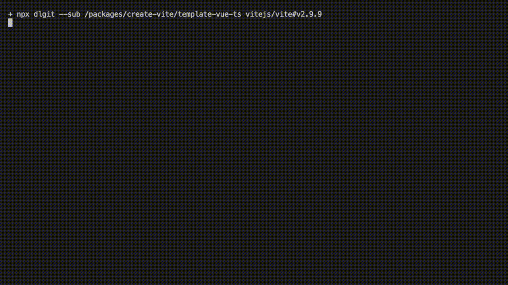

Download part of a git repository without wasting your bandwidth.
NPM Package | GitHub Repository | Documentation

dlgit can download only part of a git repository and reduce the time and bandwidth you spend downloading the whole repository.
dlgit does the followings:
git clone with optimized options.--filter=blob:none to avoid downloading all file contents.--no-checkout to avoid automatically checking out the files.--depth=1 to avoid downloading history of the repository.sparse-checkout to only download the files that are required.git checkout to check out the files you need..git directory to avoid messing up the files.npm i -g dlgit
dlgit --help
# dg --help
# this should work as well since dg is the alias of dlgit
dg --sub /packages/create-vite/template-vue-ts "vitejs/vite#v2.9.9"
# download the files in the subdirectory `packages/create-vite/template-vue-ts` in
# tag `v2.9.9` of the GitHub repository `vitejs/vite`
npx dlgit --help
npx dlgit --sub /public "https://gitlab.noj.tw/noj/codebase/frontend.git#readme"
# download the files in the subdirectory `public` in
# branch `readme` of the repository `https://gitlab.noj.tw/noj/codebase/frontend.git`
❯ dlgit -h
Usage: dlgit [options] [command] <remote>
Arguments:
remote Remote repository to download from (e.g. Open-OJ/3OJ#gh-pages)
Options:
-V, --version output the version number
-s, --sub <dir> Subdirectory to download
-c, --cache <cache> Cache directory
-T, --ttl <ttl> Cache TTL (ms)
-t, --to <to> Destination directory
-f, --force Overwrite existing directory if it exists
-h, --help display help for command
Commands:
clear-cache [options] Clear the cache
parse <remote> Parse remote repository location
It supports both ESM and CJS modules.
import Dlgit from "dlgit";
const dlgit = new Dlgit();
dlgit.dl("Open-OJ/3OJ#gh-pages", {
sub: "problems",
cache: "cache-dir",
ttl: 1000 * 60 * 60 * 24,
to: "destination-dir"
});
// all options are optional
Generated using TypeDoc